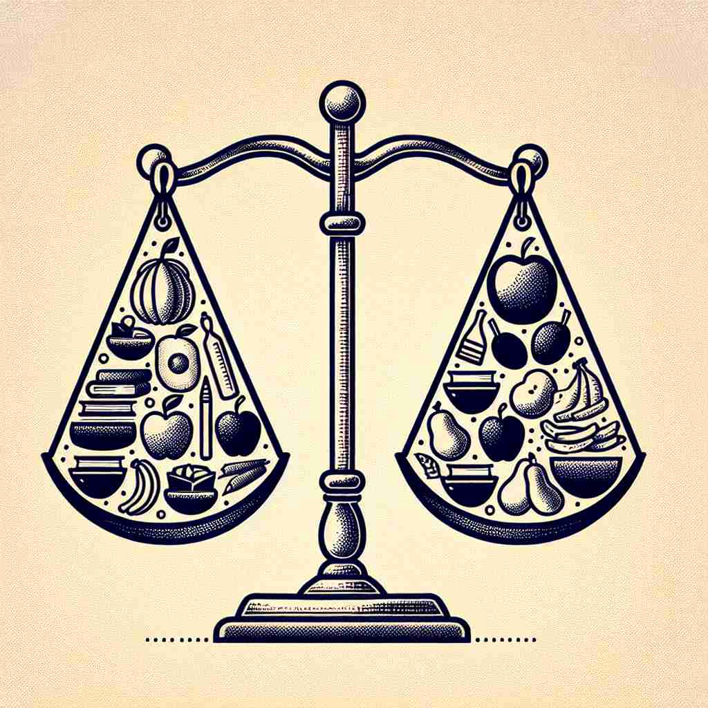

💬 The judge makes an unprejudiced judgment based on the evidence. 法官根据证据做出公正的裁决。

💬 The group had an unprejudiced discussion about their ideas. 小组对他们的想法进行了无偏见的讨论。
💬 In the meeting, everyone participated in an unprejudiced discussion about the new policies. 在会议上，大家参与了一场公正无偏见的讨论，讨论了新政策。